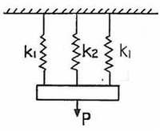
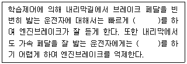
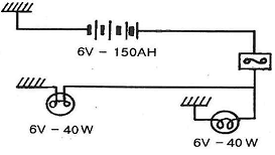

자동차정비산업기사 (2015-08-16 기출문제)
1과목: 일반기계공학
1. 테이퍼 구멍을 가진 다이에 재료를 잡아 당겨 통과시켜 가공제품이 다이 구명의 최소단면 형상 채수를 갖게 하는 가공법은?
- 전조가공
- 절단가공
- 인발가공
- 프레스가공
(정답률: 84%)

2. 주조형 목형(원형)을 실물치수보다 크게 만드는 가장 중요한 이유는?
- 주형의 치수가 크기 때문이다.
- 코어를 넣어야 하기 때문이다.
- 잔형을 덧붙임 하여야 하기 때문이다.
- 수축 여유와 가공 여유를 고려하기 때문이다.
(정답률: 87%)
3. 아크용접 피복제(flux)의 역할로 옳지 않은 것은?
- 용착 금속의 탈산 정련작용을 한다.
- 용적을 미세화하고 용착효율을 높인다.
- 용융금속에 필요한 원소를 보충시켜 준다.
- 슬래그가 되어 용융금속을 급냉시켜 조직을 튼튼하게 한다.
(정답률: 73%)
4. 스팬이 2m인 단순보의 중앙에 1000kgf의 집중하중이 작용할 때, 최대 휨모멘트는 몇 kgfㆍm 인가?
- 250
- 500
- 25000
- 50000
(정답률: 62%)
5. 비틀림 모멘트가 작용하는 원형축에 관한 설명으로 옳지 않은 것은?
- 비틀림 응력은 반지름에 비례한다.
- 비틀림 각은 원형축 길이에 비례한다.
- 비틀림 응력은 극관성 모멘트에 반비례한다.
- 축의 중심에서 최대 비틀림 응력이 발생된다.
(정답률: 43%)
6. 판 두께 10mm, 인장강도 3500N/cm2, 안전계수 4인 연강판으로 5N/cm2의 내압을 받는 원통을 만들고자 한다. 이때 원통의 안지름은 몇 cm 인가?
- 87.5
- 175
- 350
- 700
(정답률: 43%)
7. 담금질성(hardenability)을 개선시키고 페라이트 조직을 강화할 목적으로 첨가하는 합금 원소는?
- Cr
- Mn
- Mo
- Ni
(정답률: 53%)
8. 고탄소강을 공구강으로 사용하는 이유로 가장 적합한 것은?
- 경도를 필요로 하기 때문에
- 전성을 필요로 하기 때문에
- 인성을 필요로 하기 때문에
- 충격에 견디어야 하기 때문에
(정답률: 71%)
9. 두줄 나사를 두 바퀴 돌렸더니 축 방향으로 12mm 이동하였다면 이 나사의 피치(p)와 리드(l) 는 각각 얼마인가?
- p= 3 mm, l= 3 mm
- p= 6 mm, l= 3 mm
- p= 3 mm, l= 6 mm
- p= 6 mm, l= 6 mm
(정답률: 68%)
10. 각도측정기인 사인바는 일정 각도 이상을 측정하면 오차가 커지는데, 일반적으로 몇 도 이하에서 사용하는가?
- 30°
- 45°
- 60°
- 75°
(정답률: 73%)
11. Y 합금의 주요 구성성분이 아닌 것은?
- 주석
- 구리
- 니켈
- 알루미늄
(정답률: 68%)
12. 지름 3m 인 원형 수직수문의 상단이 수면 아래 6m 에 있을 때 물의 전압력은?
- 28톤
- 36톤
- 41톤
- 53톤
(정답률: 37%)
13. 공작기계의 명칭과 가공법이 바르게 연결된 것은?
- 선반 - 기어 가공, 키 홈 가공
- 밀링 - 수나사 가공, 기어 가공
- 연삭기 - 평면 가공, 외경 가공
- 드릴링 머신 - 카운터 보링 가공, 기어 가공
(정답률: 67%)
14. 방향 제어 밸브를 분류하는 방법이 아닌 것은?
- 밸브의 기능에 의한 분류
- 포트의 크기에 의한 분류
- 밸브의 구조에 의한 분류
- 밸브의 설계 방식에 의한 분류
(정답률: 64%)
15. 언더컷을 방지하기 위하여 표준이의 래크공구로 표준 절삭량보다 낮게 절삭하여 기준 피치선의 피치원보다 다소 바깥쪽으로 절삭한 기어는?
- 스퍼 기어
- 인터널 기어
- 전위 기어
- 헬리컬 기어
(정답률: 58%)
16. 스프링 장치에 인장하중 P = 100N 일 때, 스프링 장치의 하중 방향의 처짐량은? (단, 스프링 상수 k1= 20N/cm 이고, k2= 10N/cm 이다.)

- 1.67cm
- 2cm
- 2.5cm
- 20cm
(정답률: 59%)
17. 구동 회전수에 의해 결정되는 토출량이 부하 압력에 관계없이 거의 일정한 용적형 펌프는?
- 기어 펌프
- 터빈 펌프
- 축류 펌프
- 볼류트 펌프
(정답률: 61%)
18. 볼 베어링의 호칭번호가 6008일 경우 안지름은 몇 mm 인가?
- 8
- 16
- 20
- 40
(정답률: 60%)
19. 동력용 나사산의 전체효율을 구할 때 필요한 항목이 아닌 것은?
- 리드
- 수직응력
- 나사산에 작용하는 하중
- 나사를 돌리는데 필요한 토크
(정답률: 60%)
20. 최대인장력 2000N 을 받을 수 있는 단면적 20mm2 인 특수강의 안전율이 4 일 때, 허용 인장응력은 몇 MPa 인가?
- 25
- 40
- 250
- 400
(정답률: 36%)
2과목: 자동차엔진
21. 가솔린기관에서 압축비가 12일 경우 열효율(ɳo)은 약 몇 % 인가? (단, 비열비(k)=1.4이다.)
- 54
- 60
- 63
- 65
(정답률: 57%)
22. 가솔린 300 cc를 연소시키기 위하여 약 몇 kgf의 공기가 필요한가? (단, 혼합비는 15, 가솔린의 비중은 0.75이다.)
- 1.19
- 2.42
- 3.37
- 49.2
(정답률: 67%)
23. 전자제어 가솔린기관의 노크 컨트롤 시스템에 대한 설명으로 가장 알맞은 것은?
- 노크 발생 시 실린더헤드가 고온이 되면 서모 센서로 온도를 측정하여 감지한다.
- 압전소자가 실린더블록의 고주파 진동을 전기적 신호로 바꾸어 ECU로 보낸다.
- 노크라고 판정되면 점화시기를 진각시키고, 노크 발생이 없어지면 지각시킨다.
- 노크라고 판정되면 공연비를 희박하게 하고, 노크 발생이 없어지면 농후하게 한다.
(정답률: 66%)
24. 가솔린 전자제어기관에서 연료제어시스템의 설명으로 거리가 가장 먼 것은?
- 체크 밸브는 재 시동성 향상을 위한 부품이다.
- 연료펌프 설치 타입 중 탱크 내장형은 소음 억제 효과가 있다.
- 연료펌프는 점화 스위치가 IG(ON)상태에서 계속 작동한다.
- 릴리프 밸브는 연료라인 내 압력이 규정값 이상으로 상승되는 것을 방지한다.
(정답률: 67%)
25. 디젤기관에서 기관의 회전속도나 부하의 변동에 따라 자동으로 분사량을 조절해 주는 장치는?
- 조속기
- 딜리버리 밸브
- 타이머
- 첵 밸브
(정답률: 82%)
26. 기관에서 디지털 신호를 출력하는 센서는?
- 전자유도 방식을 이용한 크랭크축각도 센서
- 압전 세라믹을 이용한 노크 센서
- 칼만 와류 방식을 이용한 공기유량 센서
- 가변저항을 이용한 스로틀포지션 센서
(정답률: 69%)
27. 간극체적 60 cc, 압축비 10 인 실린더의 배기량(cc)은?
- 540
- 560
- 580
- 600
(정답률: 57%)
28. 기관의 냉각장치에 사용되는 서모스탯에 대한 설명으로 거리가 먼 것은?
- 과열을 방지한다.
- 과냉을 통해 차내 난방효과를 낮춘다.
- 기관의 온도를 일정하게 유지한다.
- 기관과 라디에이터 사이에 설치되어 있다.
(정답률: 84%)
29. 연속 가변밸브타이밍(Continuously Variable Valve Timing) 시스템의 장점이 아닌 것은?
- 유해배기가스 저감
- 연비 향상
- 공회전 안정화
- 밸브강도 향상
(정답률: 76%)
30. 전자제어 연료분사장치의 인젝터는 무엇에 의해서 연료 분사량을 조절하는가?
- 플런저의 하강속도
- 로커암의 작동 속도
- 연료의 압력 조절
- 컴퓨터(ECU)의 통전시간
(정답률: 85%)
31. 공기과잉율(λ)에 대한 설명으로 옳지 않은 것은?
- 연소에 필요한 이론적 공기량에 대한 공급된 공기량과의 비를 말한다.
- 기관에 흡입된 공기의 중량을 알면 연료의 양을 결정할 수 있다.
- 공기과잉율이 1에 가까울수록 출력은 감소하며 검은 연기를 배출하게 된다.
- 자동차 기관에서는 전부하(최대분사량)일 때 공기과잉률은 0.8~0.9 정도가 된다.
(정답률: 82%)
32. 피스톤 클리어런스(piston clearance)가 클 때 나타나는 현상으로 거리가 가장 먼 것은?
- 블로바이(blow by) 현상
- 다이류션(dilution) 현상
- 압축압력 비정상 상승
- 피스톤 슬랩 발생
(정답률: 51%)
33. 크랭크각 센서에 활용되고 있지 않은 검출방식은?
- 홀(hall) 방식
- 전자유도(induction) 방식
- 광전(optical) 방식
- 압전(piezo) 방식
(정답률: 67%)
34. 티타니아 산소 센서에 대한 설명 중 거리가 가장 먼 것은?
- 센서의 원리는 전자 전도성이다.
- 지르코니아 산소 센서에 비해 내구성이 크다.
- 입력전원 없이 출력전압이 발생한다.
- 지르코니아 산소 센서에 비해 가격이 비싸다.
(정답률: 71%)
35. 엔진오일의 성능향상을 위해 첨가하는 물질이 아닌 것은?
- 산화 촉진제
- 청정 분산제
- 응고점 강하제
- 점도지수 향상제
(정답률: 80%)
36. 자동차 기관의 배기가스 재순환장치로 감소되는 유해배출 가스는?
- CO
- HC
- NOx
- CO2
(정답률: 76%)
37. LPI시스템에서 부탄과 프로판의 조성비율을 판단하기 위한 센서 2가지는?
- 연료량 감지 센서, 온도 센서
- 유온 센서, 압력 센서
- 수온 센서, 유온 센서
- 압력 센서, 온도 센서
(정답률: 58%)
38. 2행정 디젤기관의 소기 방식이 아닌 것은?
- 가변 벤튜리 소기식
- 단류 소기식
- 루프 소기식
- 횡단 소기식
(정답률: 68%)
39. 배출가스 정밀검사에서 부하검사방법 중 경유사용 자동차의 엔진회전수 측정결과 검사기준은?
- 엔진정격회전수의 ±5% 이내
- 엔진정격회전수의 ±10% 이내
- 엔진정격회전수의 ±15% 이내
- 엔진정격회전수의 ±20% 이내
(정답률: 64%)
40. 운행하는 자동차의 소음도 검사 확인 상항에 대한 설명으로 틀린 것은?
- 소음덮개의 훼손여부를 확인한다.
- 경적소음은 원동기를 가동 상태에서 측정한다.
- 경음기의 추가 부착여부를 확인한다.
- 배출가스가 최종배출구 전에서 유출되는지 확인한다.
(정답률: 63%)
3과목: 자동차섀시
41. 속도계 시험기의 판저에 대한 정밀도 검사기준으로 적합한 것은?
- 판정 기준값의 1km 이내
- 판정 기준값의 2km 이내
- 판정 기준값의 3km 이내
- 판정 기준값의 4km 이내
(정답률: 63%)
42. 토크비가 5이고 속도비가 0.5이다. 이 때 펌프가 3000rpm으로 회전할 때 토크 효율은?
- 1.5
- 2.5
- 3.5
- 4.5
(정답률: 72%)
43. 자동차 주행 중 핸들이 한쪽으로 쏠리는 이유로 적합하지 않은 것은?
- 좌ㆍ우 타이어의 공기압 불평형
- 쇽업쇼버의 좌ㆍ우 불균형
- 좌ㆍ우 스프링 상수가 같을 때
- 뒤 차축이 차의 중심선에 대하여 직각이 아닐 때
(정답률: 83%)
44. 공기브레이크에서 공기압축기의 공기 압력을 제어하는 것은?
- 안전 밸브
- 언로드 밸브
- 릴레이 밸브
- 체크 밸브
(정답률: 70%)
45. 전자제어 현가장치의 제어 중 급 출발시 노즈업 현상을 방지하는 것은?
- 앤티 다이브 제어
- 앤티 스쿼드 제어
- 앤티 피칭 제어
- 앤티 롤링 제어
(정답률: 70%)
46. 다음은 자동변속기 학습제어에 대한 설명이다. 괄호안에 알맞은 것을 순서대로 적은 것은?

- 다운시프트, 다운시프트
- 업시프트, 업시프트
- 다운시프트, 업시프트
- 업시프트, 다운시프트
(정답률: 71%)
47. 제동장치에서 하이드로 백의 릴레이 밸브 피스톤은 무엇에 의하여 작동되는가?
- 공기압력
- 흡기다기관의 부압
- 마스터 실린더 유압
- 동력 피스톤
(정답률: 52%)
48. 자동차가 72km/h 로 주행하기 위한 엔진의 실마력은? (단, 전주행저항은 75 kgf 이고, 동력전달효율은 0.8 이다.)
- 16 PS
- 20 PS
- 25 PS
- 30 PS
(정답률: 42%)
49. 차량 총중량이 2ton인 자동차가 등판저항이 약 350kgf로 언덕길을 올라갈 때 언덕길의 구배는 약 얼마인가?
- 10°
- 11°
- 12°
- 13°
(정답률: 37%)
50. 전자제어 제동장치(ABS)의 구성요소가 아닌 것은?
- 휠 스피드 센서
- 차고 센서
- 어큐뮬레이터
- 하이드롤릭 유닛
(정답률: 74%)
51. 무단변속기의 특징과 가장 거리가 먼 것은?
- 변속단이 있어 약간의 변속 충격이 있다.
- 동력성능이 향상된다.
- 변속패턴에 따라 운전하여 연비가 향상된다.
- 파워트레인 통합제어의 기초가 된다.
(정답률: 80%)
52. 적용목적이 같은 장치와 부품으로 연결된 것은?
- ABS와 노크 센서
- EBD(electronic brake-force distribution) 시스템과 프로포셔닝 밸브
- 공기유량시스템과 요레이트 센서
- 주행속도장치와 냉각수온 센서
(정답률: 80%)
53. 선회 주행시 앞바퀴에서 발생하는 코너링 포스가 뒷바퀴보다 크게 되면 나타나는 현상은?
- 토크 스티어링 현상
- 언더 스티어링 현상
- 리버스 스티어링 현상
- 오버 스티어링 현상
(정답률: 68%)
54. 곡선 주로를 주행할 때 원심력에 대항하는 타이어의 저항인 코너링 포스에 영향을 주는 요소가 아닌 것은?
- 세백(set back)
- 타이어 공기압력
- 타이어의 수직 하중
- 타이어 크기
(정답률: 72%)
55. 클러치 페달을 밟았다가 천천히 놓을 때 페달이 심하게 떨리는 이유가 아닌 것은?
- 클러치 조정불량이 원인이다.
- 클러치 디스크 페이싱의 두께차가 있다.
- 플라이 휠이 변형되었다.
- 플라이 휠의 링기어가 마모되었다.
(정답률: 64%)
56. 내부에는 고탄소강의 강선(피아노선)을 묶음으로 넣고 고무로 피복한 링 상태의 보강부위로 타이어를 림에 견고하게 고정시키는 역할을 하는 부분은?
- 카커스(carcass)부
- 트레드(tread)부
- 숄더(shoulder)부
- 비드(bead)부
(정답률: 65%)
57. 자동변속기에서 자동변속시점을 결정하는 가장 중요한 요소는?
- 엔진 스로틀 밸브 개도와 차속
- 엔진 스로틀 밸브 개도와 변속시간
- 자동변속기 매뉴얼 밸브와 차속
- 변속 모드 스위치와 변속시간
(정답률: 72%)
58. 전차륜 정렬에서 조향 핸들의 조작력을 경감시키고 바퀴의 직진 복원력을 주는 가장 중요한 것은?
- 토인
- 캐스터
- 토아웃
- 캠버
(정답률: 67%)
59. 병렬형 하이브리드 자동차의 특징을 설명한 것 중 거리가 먼 것은?
- 모터는 동력 보조만 하므로 에너지 변환 손실이 적다.
- 기존 내연기관 차량을 구동장치의 변경 없이 활용 가능하다.
- 소프트 방식은 일반 주행 시에는 모터 구동만을 이용한다.
- 하드 방식은 EV주행 중 엔진 시동을 위해 별도의 장치가 필요하다.
(정답률: 61%)
60. 베벨(bevel) 기어식 종감속/차동장치가 장착된 자동차가 급커브를 천천히 선회하고 있을 때 차동 케이스 내의 어떤 기어들이 자전하고 있는가?
- 외측 차동 사이드 기어들만
- 차동 피니언들만
- 차동 피니언과 차동 사이드 기어 모두
- 외ㆍ내측 차동 사이드 기어들만
(정답률: 68%)
4과목: 자동차전기
61. 분자 자석설에 대한 설명으로 맞는 것은?
- 자속은 동종 반발, 이종 흡입의 성질이 있다.
- 자속은 자극 가까운 곳의 밀도는 크고 방향은 모두 극쪽으로 향한다.
- 자력은 자속이 투과하는 매질의 투과율 및 자계강도에 비례하다.
- 강자성체는 자화되어 있지 않은 경우에도 매우 작은 분자자석으로 되어 있다.
(정답률: 57%)
62. 그림과 같은 회로에서 가장 적합한 퓨즈의 용량은?

- 10A
- 15A
- 25A
- 30A
(정답률: 60%)
63. 멀티테스터(Multitester)로 릴레이 점검 및 판단 방법으로 틀린 것은?
- 접점 점검은 부하전류가 흐르도록 하고 멀티테스터로 저항 측정을 해야 한다.
- 단품 점검 시 코일 저항이 규정 값보다 현저히 차이가 나면 내부 단락 및 단선이라고 볼 수 있다.
- 부하전류가 흐를 때 양 접점 전압이 0.2V 이하이면 정상이라 본다.
- 작동이 원활해도 멀티테스터로 접점 전압측정이 중요하다.
(정답률: 58%)
64. 점화플러그의 방전전압에 직접적으로 형향을 미치는 요인이 아닌 것은?
- 전극의 틈새모양, 극성
- 혼합가스의 온도, 압력
- 흡입공기의 습도와 온도
- 파워 트랜지스터의 위치
(정답률: 77%)
65. 자동차안전기준에 관한 규칙상 경광등의 등광색을 적색 또는 청색으로 할 수 없는 경우는?
- 국군 및 주한 국제 연합군용 자동차 중 군내부의 질서유지 및 부대의 질서있는 이동을 유도하는데 사용되는 자동차
- 수사기관의 자동차 중 범죄수사를 위하여 사용되는 자동차
- 전파 감시업무에 사용되는 자동차
- 교도소 또는 교도기관의 자동차 중 도주자의 체포 또는 피수용자의 호송ㆍ경비를 위하여 사용되는 자동차
(정답률: 82%)
66. 엔진이 크랭킹이 되지 않을 경우에 자기 진단기로 점검 시 센서데이터 항목 중 가장 중점적으로 확인해야할 항목은? (단, 차량의 각 전원 접지 시스템은 정상이다.)
- 인히비터스위치 위치 신호
- rpm 신호
- 에어플로우센서 신호
- 크랭크축위치센서 신호
(정답률: 72%)
67. 점화계통에 사용되는 축전기에 대하여 잘못 설명한 것은?
- 1차 전류의 차단시간을 단축하여 2차 전압을 높인다.
- 접점사이에 발생하는 불꽃을 흡수하여 접점의 소손을 방지한다.
- 2차 전압의 저하를 방지하도록 단속기 접점과 직렬로 접속한다.
- 접점이 닫혔을 때 축적된 전하를 방출하여 1차 전류의 회복을 빠르게 한다.
(정답률: 59%)
68. 기동전동기에 흐르는 전류는 120A이고 전압은 12V 일 때, 이 기동전동기의 출력은 몇 PS인가?
- 0.56
- 1.22
- 18.2
- 1.96
(정답률: 61%)
69. 점화코일의 시정수에 대한 설명으로 맞는 것은?
- 시정수가 작은 점화코일은 1차 전류의 확립이 빠르고 저속성능이 양호하다.
- 시정수는 1차코일의 인덕턴스를 1차코일의 권선저항으로 나눈 값이다.
- 시정수는 1타 전류의 값이 최대값에 약 88.3%에 도달할 때까지의 시간이다.
- 인덕턴스를 작게 하면 권선비를 크게 해야 한다.
(정답률: 61%)
70. 하이브리드 차량의 정비시 전원을 차단하는 과정에서 안전 플러그를 제거 후 고전압 부품을 취급하기 전에 5~10분 이상 대기 시간을 갖는 이유 중 가장 알맞은 것은?
- 고전압 배터리 내의 셀의 안정화를 위해서
- 제어모듈 내부의 메모리 공간의 확보를 위해서
- 저전압(12V) 배터리에 서지 전압이 인가되지 않기 위해서
- 인버터 내의 컨덴서에 충전되어 있는 고전압을 방전시키기 위해서
(정답률: 79%)
71. 하이브리드 자동차(HEV)에 대한 설명으로 거리가 먼 것은?
- 병렬형(Parallel)은 엔진과 변속기가 기계적으로 연결되어 있다.
- 병렬형(Parallel)은 구동용 모터 용량을 크게 할 수 있는 장점이 있다.
- FMED(Flywheel Mounted Electric Device)방식은 모터가 엔진 측에 장착되어 있다.
- TMED(Transmission Mounted Electric Device)는 모터가 변속기 측에 장착되어 있다.
(정답률: 54%)
72. TXV 방식의 냉동사이클에서 팽창밸브는 어떤 역할을 하는가?
- 고온 고압의 기체 상태의 냉매를 냉각시켜 액화시킨다.
- 냉매를 팽창시켜 고온 고압의 기체로 만든다.
- 냉매를 팽창시켜 저온 저압의 무화상태 냉매로 만든다.
- 냉매를 팽창시켜 저온 고압의 기체로 만든다.
(정답률: 69%)
73. 배터리전해액의 온도가 낮아지면 일어나는 현상으로 틀린 것은?
- 용량이 저하된다.
- 비중이 높아진다.
- 황산과 극판 작용물질의 화학작용이 활발하다.
- 추운 겨울이나 한랭지에서는 전해액이 빙결될 수 있다.
(정답률: 63%)
74. 자동에어컨(FATC) 작동 시 바람은 배출되나 차갑지 않다. 점검해보니 컴프레셔 스위치의 작동 음이 들리지 않는다. 고장원인으로 거리가 가장 먼 것은?
- 컴프레셔 릴레이 불량
- 트리플 스위치 불량
- 블로우 모터 불량
- 써머 스위치 불량
(정답률: 70%)
75. 실내온도 센서(NTC특성) 점검방법에 관한 설명으로 옳지 않은 것은?
- 센서 전원 5V 공급여부
- 실내온도 변화에 따른 센서 출력값 일치 여부
- 에어튜브 이탈 여부
- 센서에 더운 바람을 인가했을 때 출력값이 상승되는지 여부
(정답률: 60%)
76. 전조등을 시험할 때 주의사항 중 틀린 것은?
- 각 타이어의 공기압은 표준일 것
- 공차상태에서 운전자 1명이 승차할 것
- 배터리는 충전한 상태로 할 것
- 엔진은 정지 상태로 할 것
(정답률: 79%)
77. 기전력 2V, 내부저항 0.2Ω의 전지 10개를 병렬로 접속했을 때 부하 4Ω에 흐르는 전류는?
- 0.333A
- 0.498A
- 0.664A
- 13.64A
(정답률: 50%)
78. 자동차에서 방향지시등의 고장 현상이 발생하였다. 다음 원인에 따른 고장 중 증상이 다른 한 가지를 고르면?
- 플래셔 유닛의 접지 불량
- 램프의 필라멘트 단선
- 램프 용량에 맞지 않는 릴레이 사용
- 램프의 정격용량이 규정보다 큰 경우
(정답률: 58%)
79. 배터리의 전해액 비중은 온도 1℃의 변화에 대해 얼마나 변화하는가?
- 0.00⑤
- 0.0007
- 0.0010
- 0.0015
(정답률: 77%)
80. 자동차의 외부에 바닥조명등을 설치할 경우에 해당되는 자동차 성능과 기준에 관한 규칙의 사항 중 거리가 먼 것은?
- 자동차가 정지하고 있는 상태에서만 점등될 것
- 자동차가 주행하기 시작한 후 1분 이내에 소등될 것
- 최대광도는 60칸델라 이하일 것
- 등광색은 백색일 것
(정답률: 58%)